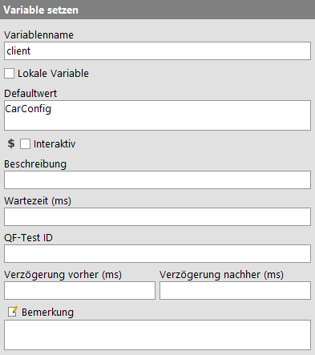
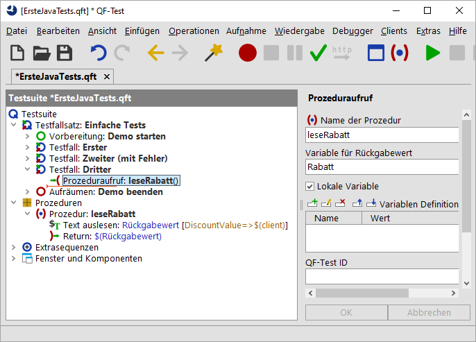

| Version 6.0.3 |
Zusätzlich zu den oben beschriebenen Wegen können die Variablen auch wie folgt gesetzt werden:
Informationen dazu, an welcher Stelle eine Variable am besten definiert wird, finden Sie im nächsten Abschnitt.
Ein 'Variable setzen' Knoten kann über den Menüpunkt »Einfügen«-»Diverse Knoten«-»Variable setzen« eingefügt werden. In den Knotendetails können Sie angeben, ob es sich um eine lokale (Häkchen bei "Lokale Variable" setzen) oder eine globale Variable handeln soll.
Die folgende Abbildung zeigt die Details eines 'Variable setzen' Knotens,
den Sie als ersten Knoten im 'Vorbereitung' Knoten finden. Es wird
eine Variable mit dem Namen client definiert. Dass es sich um
eine globale Variable handelt, erkennen Sie daran, dass das Attribut
'Lokale Variable' nicht gesetzt ist.
|
|  | ||
|
| Abbildung 6.10: Details des 'Variable setzen' Knoten | ||
Wenn eine Variable mit dem Rückgabewert einer Prozedur gesetzt werden soll, geben Sie den Variablennamen im Attribut "Variable für Rückgabewert" des Prozeduraufrufs an. In der Prozedur selbst müssen Sie als letzten auszuführenden Knoten einen 'Return' Knoten einfügen, der den betreffenden Wert zurückgibt.
Die Prozedur in der folgenden Abbildung liest den Rabattwert aus dem SUT
und gibt den Wert an den aufrufenden Testfall
zurück. Dort heißt die empfangende Variable Rabatt und ist als lokale Variable deklariert.
Dieses Beispiel ist nicht in der Übungstestsuite enthalten.
|
|  | ||
|
| Abbildung 6.11: Prozedur mit Rückgabewert | ||
Der 'Text auslesen' Knoten in der obigen Abbildung ist einer der QF-Test Knoten, die direkt den Wert einer Variablen setzen. Dabei wird der Variablenname in dem entsprechend benannten Attribut eingetragen. Sie haben wiederum die Wahl, ob es eine lokale oder globale Variable werden soll.
Es gibt eine Reihe von Knoten, die eine "Variablen Definitionen" Tabelle besitzen. Dort können Sie lokale Variablen setzen. Falls sich der betreffende Knoten in einer Prozedur befindet, wird die Variable als lokale Variable an die Prozedur gebunden, ansonsten als lokale Variable an den Testfall. Variablen, die mittels dieser Tabelle an den Testsuite Knoten gebunden sind, können von allen Knoten der Testsuite referenziert werden.
Alle Knoten, an die Variablen gebunden werden können, werden im Debugger-Modus im Variablen Definitionen Fenster rechts unten angezeigt, wenn sie gerade ausgeführt werden.
Variablen können auch über die Kommandozeile spezifiziert werden. Hierzu verwenden
Sie den Kommandozeilenparameter -variable.
Beispiel: qftest -batch -variable "browser"="ie" test.qft.
Weitere Informationen hierzu finden Sie im Handbuch, Kapitel 'Kommandozeilenargumente'.
| Letzte Änderung: 6.9.2022 Copyright © 2002-2022 Quality First Software GmbH |